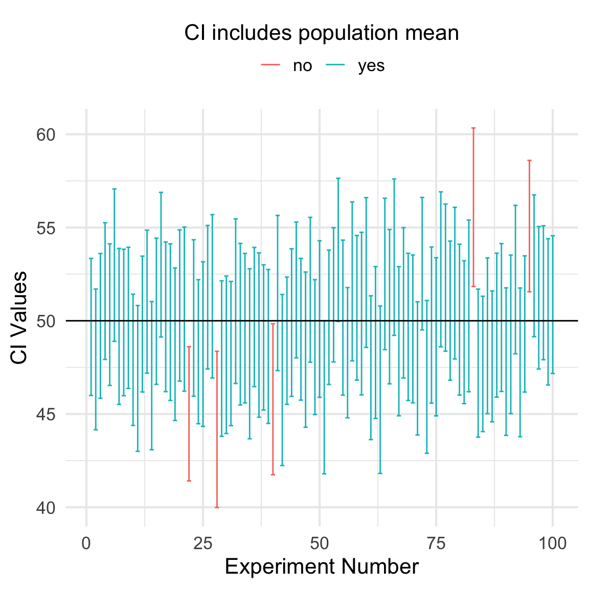
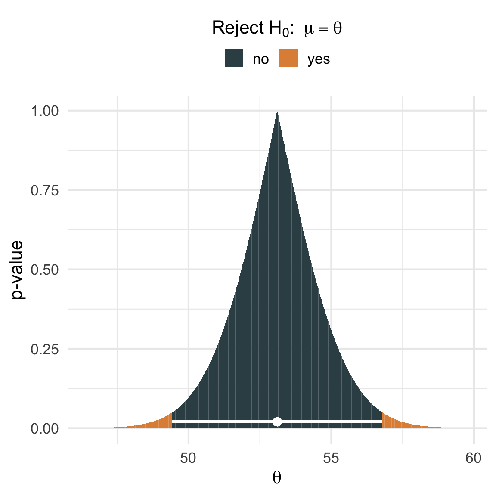

A confidence interval contains the parameter values that are consistent with your observed sample data.
For example, suppose we observe a sample mean \(\bar{x} = 100\) and calculate the \(95\%\) confidence interval for the population mean to be \([90, 110]\). This interval suggests that any population mean between \(90\) and \(110\) could plausibly lead to observing a sample mean of \(100\).
The main point of this post is that the above interpretation of a confidence interval is a valid one, and that it is more useful than the conventional interpretation. If you’d like to better understand what the above interpretation means and why its valid, I invite you to read on.
Introduction
Confidence intervals are a cornerstone of statistical inference; they’re used to express uncertainty around a point estimate. However, misinterpretations of confidence intervals abound. This is both unsurprising and understandable since 1) confidence intervals are usually defined in reference to an infinite series of hypothetical, repeated experiments, and 2) most people analyzing data are usually concerned with a single experiment.
Confidence intervals aren’t fundamentally incompatible with analysts’ goals, though. They can be interpreted in a way that is meaningful (and potentially even useful!) in the context of a single experiment, and the goal of this post is to walk through such an interpretation with words, code, and a bit of math.
Set up
Suppose we sample \(x_1, \dots, x_n\) from a normal distribution \(\mathcal{N}(\mu, \sigma^2)\), and that we are interested in testing the follow hypotheses about the population mean
for some \(\theta\)1. We can choose a significance level \(\alpha\) and perform a two-sided \(t\)-test to assess this null hypothesis. Recall that our \(\alpha\) level is our error rate – the probability that we reject the null hypothesis when the null hypothesis is true. Canonically, \(\theta = 0\) and \(\alpha = 0.05\).
We first find our critical value for this test, \(t_{crit, \alpha}\). We get this value by finding the \(1 - \alpha/2\) quantile of the \(\text{Student-}t\) distribution with \(n-1\) degrees of freedom.
We can then calculate our observed \(t\)-statistic as
where \(\bar{x}\) denotes the sample mean and \(s\) denotes the sample standard deviation.
We reject the null hypothesis that \(\mu = \theta\) when the \(p\)-value is greater than \(\alpha\), or \(|t_{obs}| \geq t_{crit, \alpha}.\) Conversely, we fail to reject the null hypothesis whenever the \(p\)-value is less than \(\alpha\), or \(|t_{obs}| < t_{crit, \alpha}\).
The “usual” interpretation of a CI
It’s often desired to have a measure of uncertainty to accompany the point estimate in the form of a confidence interval.
A \((1 - \alpha)100\%\) CI is an interval that covers the true parameter value in approximately \((1 - \alpha)100\%\) of repeated experiments. Such an interval is a function of our sample data and can be constructed as
To make the interpretation a bit more concrete, let’s simulate 100 experiments at \(\alpha = 0.05\) and compute a \(95\%\) confidence interval for each. We should expect approximately 95 of the 100 intervals to cover the true parameter value.
The code below simulates these experiments by repeatedly drawing random samples from a normal distribution \(\mathcal{N}(50, 20^2)\) and calculating a confidence interval for the population mean. The resulting confidence intervals are then plotted. They are colored blue if they contain the the population mean and red if they do not.
Code
library(ggplot2)library(dplyr)set.seed(271828)#' compute the confidence interval for the mean of x#' @param x sample data#' @param alpha the significance levelcompute_ci <-function(x, alpha =0.05) { xbar <-mean(x) std_err <-sd(x) /sqrt(n) n <-length(x) tcrit <-qt(1- (alpha /2), df = n -1) lb <- xbar - tcrit * std_err ub <- xbar + tcrit * std_errreturn(c(lb = lb, ub = ub))}# define population valuesmu <-50std <-20# sample sizen <-100n_experiments <-100# run "experiments"ci_df <- purrr::map_dfr(1:n_experiments, function(i) compute_ci(rnorm(n, mu, std)))# determine whether each CI contains mu and plotci_covers_df <- ci_df %>% tibble::rowid_to_column() %>%mutate(covers =ifelse(lb <= mu & mu <= ub, "yes", "no"))n_covered <-sum(ci_covers_df$covers =="yes")ci_covers_df %>%ggplot(aes(rowid)) +geom_errorbar(aes(ymin = lb, ymax = ub, col = covers)) +geom_hline(yintercept = mu) +theme_minimal(base_size =14) +guides(col =guide_legend(title ="CI includes population mean", position ="top", title.position ="top",title.hjust =0.5 ) ) +labs(x ="Experiment Number",y ="CI Values" )

In this example, exactly 95 out of 100 \(95\%\) CIs cover the population mean of 50. Exactly as we would expect for a confidence interval.
In practice, though, you usually run one experiment and so you only get one confidence interval. A common misunderstanding leads analysts to say something like “there’s a \(95\%\) chance that the population parameter lies within the interval.”, but that’s not quite right. Once you’ve computed a CI it either covers the population mean or it does not2.
You might recall a statistics professor telling you that if 0 is in your confidence interval, then you fail to reject the null hypothesis that \(\mu = 0\). You might even recall asking yourself why that is the case. This idea is based on an alternative interpretation of a confidence interval. To be clear, the “usual” interpretation we saw above isn’t wrong, it’s simply one perspective. Here, we’ll explore the concept from a different angle.
The confidence interval can be expressed in terms of statistical significance, e.g.: “The 95% confidence interval represents values that are not statistically significantly different from the point estimate at the .05 level.”
Essentially, this says that if we set up a null hypothesis \(H_0{:\;} \mu = \theta\) such that \(\theta\) is any value covered by the \((1-\alpha)100\%\) confidence interval, then we would fail to reject the null hypothesis at a significance level of \(\alpha\). Importantly for us, notice that this interpretation doesn’t make any references to a series of hypothetical experiments, but references only a single confidence interval.
To better grasp this alternative interpretation it will again be helpful to walk through an example. Let’s start by generating sample data and computing a \((1-\alpha)100\%\) confidence interval for the mean. We’ll stick with \(\alpha = 0.05\) so that we get a \(95\%\) CI.
# n = 100, mu = 1, std = 1x <-rnorm(n, mu, std)ci <-compute_ci(x, alpha =0.05)round(mean(x), 2)
[1] 53.11
round(ci, 2)
lb ub
49.44 56.78
Okay, so we’ve collected some data and observed a sample mean of 53.11 and computed a confidence interval goes from 49.44 to 56.78.
What would happen if we set up a hypothesis test \(H_0{:\;} \mu = 49.5\)? Or if instead we set up \(H_0{:\;} \mu = 55\)? According to Wikipedia, we would fail to reject the first null hypothesis and reject the second because 49.5 is inside the interval and 57 is not. If we run those \(t\)-tests, that’s exactly what happens.
t.test(x, mu =49.5)$p.valuet.test(x, mu =57)$p.value
[1] 0.05410432
[1] 0.03778379
Just to be sure, let’s expand on the code above such that we test \(H_0{:\;} \mu = \theta\) for a range of values both inside and outside of the confidence interval and see what happens.
Code
# generate a range of thetas inside & outside the CIthetas <-seq(ci["lb"] -3, ci["ub"] +3, length.out =1000)#' compute the p-value for a one-sample t-test#' @param x sample data#' @param theta the value of theta in the null hypothesis#' @param alpha the significance levelget_t_test_pval <-function(x, theta, alpha =0.05) { res <-t.test(x, mu = theta, conf.level =1- alpha)return(res$p.val)}# for every theta in thetas, run a hypothesis test for# H_O: mu = theta and get the p-valuepvalues <-sapply(thetas, function(theta) get_t_test_pval(x, theta))pvalues_df <-tibble(thetas, pvalues) %>%mutate(reject_h0 =ifelse(pvalues < .05, "yes", "no"))ggplot(pvalues_df, aes(thetas, pvalues)) +geom_col(aes(fill = reject_h0)) + ggsci::scale_fill_jama() +geom_errorbarh(aes(y =0.02, xmin = ci[1], xmax = ci[2]), height =0, col ="white", lwd =1) +geom_point(x =mean(x), y =0.02, col ="white", size =3) +theme_minimal(base_size =14) +guides(fill =guide_legend(position ="top",title = latex2exp::TeX("Reject $H_0 : \\; \\mu = \\theta$"),title.position ="top",title.hjust =0.5 ) ) +labs(x =expression(theta),y ="p-value" )

The x-axis in the above plot reflects the range of the different \(\theta\) values and the y-axis reflects the \(p\)-value for each corresponding \(t\)-test. The white point corresponds the sample mean of 53.11 and the white horizontal line corresponds to the confidence interval [49.44, 56.78.].
Just like Wikipedia claimed! None of the values inside of the confidence interval are statistically significantly different from the sample mean since their \(p\)-values are greater than or equal to .05. In other words, each value in the confidence interval represents a value for \(\mu\) that is consistent with the observed sample mean. On the other hand, all \(p\)-values for the tests concerning \(\theta\) values outside of the interval are \(<.05\). By the same logic, each value outside the confidence interval represents a value for \(\mu\) that is in-consistent with the observed sample mean.
So we have managed to find a way to say something about the values inside of a single confidence interval – they are parameter values that are not significantly different than the sample mean – but can we be a little more precise?
I think so. We can clarify what is meant by “consistent” in this context. To start, let’s revisit a common interpretation of a \(p\)-value. It’s the probability of obtaining test results at least as extreme as the results we actually observed, under the assumption that the null hypothesis is correct. The phrase “at least as extreme” can be read as “greater than or equal to the absolute value of”. We fail to reject \(H_0{:\;} \mu = \theta\) when the \(p\)-value is less than \(\alpha\).
For example, if the population mean was truly \(\mu = 49.5\), then the probability of observing a sample mean \(|\bar{x}| \geq 53.11\) is 0.054 (this is the \(p\)-value we computed above). In other words, a population mean of 49.5 is consistent with our observed sample mean because if it really was the true population mean, we would observe a sample mean \(|\bar{x}| > 53.11\) 5.4% of the time. The reason 49.5 is “consistent” with our observed sample mean, is because the \(p\)-value of 5.4% is greater than 5%, the \(\alpha\) level.
We can extend this logic to all of the parameter values inside the confidence interval to say how the values in the confidence interval are consistent with the sample mean. Each value in a \((1 - \alpha)100\%\) confidence interval represents a value for \(\mu\) that would lead to observing a sample mean greater than or equal to \(|\bar{x}|\) at least \(\alpha(100)\%\) of the time3.
The data we generated above had a sample mean of 53.11 and a 95% CI with lower and upper bounds of 49.44 and 56.78, respectively. We can say that the the values in the CI are consistent with the sample mean in that we would expect to see a sample mean greater than or equal to 53.11 at least 5% of the time if the true population mean \(\mu\) was equal to any value between 49.44 and 56.78.
A Caveat
This exercise has allowed us to interpret a given confidence interval without making reference to the long-run proportion of times a confidence interval covers the population parameter in an infinite series of hypothetical experiments. What this exercise hasn’t done is help us determine whether the confidence interval which we’ve computed covers the population parameter (see the plot above). Thus, we should still expect to completely miss the population parameter in \(\alpha(100)\%\) of CIs over the long run, as \(\alpha\) represents our error rate.
Why does this work?
To understand why values inside of the confidence interval are not statistically significantly different from the point estimate, we’ll need to consider the relationship between hypothesis tests and confidence intervals. Recall that we are testing hypotheses regarding a population mean \(H_0{:\;} \mu = \theta \text{ vs. } H_1{:\;} \mu \neq \theta\) at significance level \(\alpha\), and we fail to reject \(H_0\) whenever
\[
t_{obs} < t_{crit, \alpha}.
\]
We can expand on that inequality to see that we fail to reject \(H_0\) whenever
The bounds in the final expression should look familar. They are the same bounds as a \((1 - \alpha)100\%\) confidence interval.
Which means that we fail to reject \(H_0{:\;} \mu = \theta\) whenever \(\theta\) is covered by the confidence interval. Just like we saw earlier.
There is a direct connection between a hypothesis test for \(\theta\) and a confidence interval. A confidence interval can be obtained by “inverting” a hypothesis test.
To further explore the relationship between hypothesis tests and confidence intervals, we need to introduce the notion of an acceptance region.
A hypothesis test for \(H_0{:\;} \mu = \theta\) has a so-called “acceptance region”. It’s defined as the set in the sample space for which we don’t reject \(H_0\)
We fail to reject \(H_0{:\;} \mu = \theta\) any time we observe a sample that’s consistent with \(\mu = \theta\). That is, when \(x_1, \dots, x_n\) belong to the acceptance region for \(\theta\).
A confidence interval is the set in the parameter space with plausible values of \(\theta\)
As we’ve seen a few times now, we fail to reject \(H_0{:\;} \mu = \theta\) any time \(\theta\) is consistent with \(x_1,\dots, x_n\). That is, when \(\theta\) is in the confidence interval.
If a sample \(x_1, \dots, x_n\) is in \(A(\theta)\), then the CI computed with that sample includes \(\theta\).
Conversely, if \(\theta\) is in the CI computed from the sample \(x_1, \dots, x_n\), then that sample is in \(A(\theta)\).
The relationship between hypothesis tests’ acceptance regions and confidence intervals demonstrates why the values in the confidence interval are not statistically significantly different than the point estimate. The sample we observed is contained in the acceptance region of all \(\theta\)’s present in the confidence interval.
This relationship also shows that hypothesis tests and confidence intervals provide consistent interpretations of the data, but from different angles. Casella & Berger (2002) sum it up nicely:
The hypothesis test fixes the parameter and asks what sample values (the acceptance region) are consistent with that fixed value. The confidence set fixes the sample value and asks what parameter values (the confidence interval) make this sample value most plausible. (p. 421)
Conclusion
The main thing I think you should take away from this post is that a perfectly valid way to define a confidence interval is that it’s an interval that contains values for the population parameter that are consistent with the observed data. Personally, I think that this interpretation is also more useful than the “usual” one because it permits a clear interpetation for the confidence interval in front of you.
References
Casella, G., & Berger, R. (2002). Statistical inference. CRC Press.
Footnotes
I’ll focus on hypothesis tests concerning populuation means in this post, but the arguments are applicable to other tests as well, e.g., those concerning mean differences or regression coefficients.↩︎
Julia Rohrer says the following on her blog, though, and I do think it’s a point well-worth considering
What are the downstream consequences of rampant misinterpretation of confidence intervals? As far as I can tell, the whole exercise seems mostly concerned about language. If I say “with a probability of 95%, this interval contains the true parameter”, I commit a faux pas. If I say “here’s my interval; in the long run, 95% of intervals created in this manner contain the true value”, I exhibit technical sophistication. But will any of my downstream inferences look differently? Is any consumer of my findings going to deal with the information differently?
The \(p\)-values are exactly 0.05 for the lower and upper bounds of the interval, and increase to 1 as you move toward the middle of the CI to the sample mean.↩︎